All the advancements of Guhs, by tab.
Alle vooruitgangen van Guhs, per tabblad.
| AdvancementVooruitgang | HowHoe |
|---|---|
| Guhmension (tabtabblad) | Appears when you get a Block of Kaasknabbels, enter the Guhmension or ride a guh.Verschijnt als je een Blok kaasknabbels krijgt, de Guhmensie in gaat of op een guh rijdt. |
| Welcome to vads dimension! | Enter the Guhmension for the first time.Ga voor het eerst de Guhmensie in. |
| Giddy-up, Guh!Hop hop, Guh! | Ride a saddled guh.Rijd op een guh met zadel. |
| Home Sweet Hamster HomeHuisje, boompje, hamster | Find a hamster house.Vind een hamsterhuis. |
| Welcome to Guhland!Welkom in Guhland! ★ | Find the very rare guh theme park.Vind het zeer zeldzame guhpretpark. |
| Won't You Be My Neighbour?Buurguhs! | Find a guh village.Vind een guhdorp. |
| Walk Like a GuhgyptianLoop als een Guhgypter ★ | Find the very rare guhramid.Vind de zeer zeldzame guhramide. |
| Set in StoneIn steen gebeiteld | Find the giant guh statue.Vind het reuzenguhstandbeeld. |
| Say Cheese!Zeg eens kaas! | Find a cheese fountain.Vind een kaasfontein. |
| The Grandest SausDe allergrootste saus ★ | Find the rare grand cheese fountain.Vind de zeldzame grote kaasfontein. |
| Mika's LairHet hol van Mika | Find an Evil Mika home.Vind een huis van Boze Mika. |
| Down the Hamster TubeDoor de hamsterbuis | Find the guh caves.Vind de guhgrotten. |
| Something Smells EvilHier ruikt iets kwaads | Find a challenging guh cave.Vind een uitdagende guhgrot. |
| Big Mika, Bigger FallHoe groter de Mika... ★ | Defeat Big Mika.Versla Grote Mika. |
| Vadsig FedVadsig gevoerd | Give a Hungry Guh 10 gefrituurde kaasknabbels.Geef een Hongerige Guh 10 gefrituurde kaasknabbels. |
| Super Vahoege!Super vahoege! | Smelt a Vahoege Vads ingot.Smelt een vahoege-vadsstaaf. |
★ = challenge advancement (purple frame).★ = uitdaging (paarse rand).
All advancements (in Dutch)Alle vooruitgangen
De Guhbarbecuether (23)
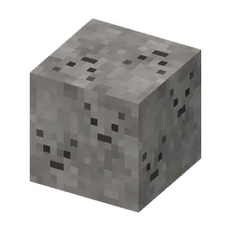 | Wie heeft dit aangebrand? | Roep de Aangebrande Mika op |
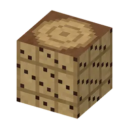 | Rondje barbecue ★ | Bezoek alle vijf de biomen van de Barbecuether |
| Gloeiende wangetjes | Tem een Asguh in het Asdal | |
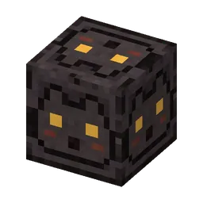 | Wie heeft hier gebarbecued? | Vind een kapotte barbecueput |
| Het is hier heet, njeg! | Stap door een barbecueportaal de Guhbarbecuether in | |
| Guh-alchemist | Brouw een Guhdrankje in een Guhbrouwketel | |
| Frituurvads in een emmer | Schep een emmer kaasfrituursaus | |
| Lekker warm licht | Pak een blok gloeikool van het plafond van de Barbecuether | |
| Doorgebakken! ★ | Versla de Aangebrande Mika en pak de gloeister | |
| De Grillguh helpt | Steek de barbecue van de Grillguh weer aan en krijg zijn geheime recept | |
| Zwart als houtskool | Maak grillkool: kaassaus over een blok steenkool | |
| Wie heeft onze knabbels? | Vind het Mika-grillpaleis vol gestolen kaasknabbels | |
| Van de grill gegrist | Versla een Vonk-Mika en pak zijn grillspies | |
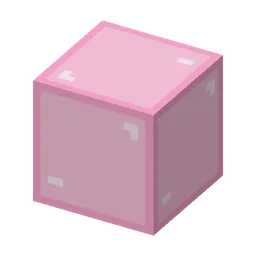 | Een baken van knabbels | Laat een Knabbelbaken branden op een piramide |
| Hoofdzaak | Bemachtig een verkoolde mikakop | |
| Chef Guh ★ | Koop het hele kokspakje bij de Grillguh | |
| Vahoeg naar huis | Voer een Rookguh tot hij vahoeg naar huis zweeft | |
| Rookguh-redder ★ | Red 10 Rookguhs | |
| De Guhbarbecuether | Grillkool, Aanmaakblokjes en een heel hete dimensie | |
| Vads tegen buit | Ruil een vahoege vads-staaf met een Nether-Mika | |
| Een burcht vol spiesen | Vind een Spiesburcht in de Barbecuether | |
| Te warm om te slapen | Probeer in de Barbecuether in bed te gaan. Njeg! | |
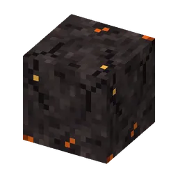 | Even afkoelen | Ga door een barbecueportaal terug naar de Guhmensie |
Diertjes van de Guhmensie (42)
| Een huis vol diertjes ★ | Tem een pluisegeltje, een guh-konijntje, een pluiseekhoorntje en een Sjokkel | |
| Wat een staart! | Zet een pluiseekhoorntje in je Guhdex (in de guhbloesembomen of het Vadswoud) | |
| Knabbelvriendje | Tem een pluiseekhoorntje met kaasknabbels | |
| Pluis! | Zet een pluisegeltje in je Guhdex (in het Vadswoud) | |
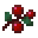 | Knuffelstekeltjes | Tem een pluisegeltje met zoete bessen (sluip, anders rolt het zich op!) |
| Zachtjes aaien | Aai een egeltje, konijntje, eekhoorntje of Sjokkel met een lege hand | |
| Hophop! | Doe een binky met je konijntje en krijg konijnensprongetjes | |
| Ook een huisje! | Laat een egeltje, konijntje, eekhoorntje of Sjokkel in een guhhuisje wonen | |
| Hangoortjes | Zet een guh-konijntje in je Guhdex (in de Guhweides) | |
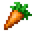 | Een eigen konijntje | Tem een guh-konijntje met een wortel of een kaasknabbel |
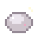 | Tink tink, glimmend! | Laat een Sjokkel in een guhhuisje stenen polijsten |
| Wiee, een rondje! | Laat je egeltje een rondje om je heen rollen (Rol eens!) | |
| Slurp! | Drink een bessensapje dat je Sjokkel gemaakt heeft | |
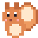 | Op mijn schouder! | Laat je eekhoorntje op je schouder zitten |
| Geen guh... toch? | Zet Sjokkel in je Guhdex (rond het kloon-eiland, of diep in de Gatenkaasgrotten) | |
| Heel, heel langzaam vriendjes | Tem een Sjokkel (sluip dichterbij en geef hem bessen) | |
| Een geheim voorraadje | Graaf een knabbelvoorraadje van een eekhoorntje op | |
| Diertjes van de Guhmensie | Zet een van de lieve diertjes van de Guhmensie in je Guhdex: een vinkje, een eendje, een egeltje... of Sjokkel? | |
| Vogelkijker ★ | Zet alle vier de vogeltjes van de Guhmensie in je Guhdex | |
| Wie is daar zo laat nog op? | Zet een Guh-uiltje in je Guhdex | |
| Kaas met een streepje | Zet een Kaasmeesje in je Guhdex | |
| Mijn! Mijn! | Laat een Zeemeeuwtje "Mijn!" roepen om jouw visje | |
| Oehoe... njeg! | Hoor een Guh-uiltje roepen in de nacht | |
| Ondersteboven! | Zie een Kaasmeesje ondersteboven onder de blaadjes hangen | |
| Zo zacht als een wolkje | Vind een pluisveertje van een Pluisvinkje | |
| Tjiep-njeg! | Zet een Pluisvinkje in je Guhdex | |
| Stil maar... | Sluip tot vlak bij een vogeltje zonder dat hij wegvliegt | |
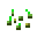 | Vogelvoer | Geef een vogeltje zijn lievelingshapje |
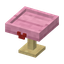 | Smullen maar! | Leg zaadjes in een vogelvoerhuisje |
| Een brutaal snaveltje | Zet een Zeemeeuwtje in je Guhdex | |
| Blub, kwak, fladder, glim! | Zet alle vijf water- en insectdiertjes in je Guhdex | |
| Alle blubkleurtjes ★ | Tem een roze, een mint, een choco, een witte én een gouden guhxolotl | |
| Een emmertje vol liefde | Schep een guhxolotl in een emmertje | |
| Mijn eigen blubje | Tem een guhxolotl met een guhvisje | |
| Lichtjes in de nacht | Zet een glimguhtje in je Guhdex (ze komen pas 's nachts) | |
| Goud waard ★ | Zie een zeldzame gouden guhxolotl van dichtbij | |
| Kwak-njeg! | Zet een guh-eendje in je Guhdex | |
| Blub-njeg! | Zet een guhxolotl in je Guhdex: een guh die een axolotl is, met pluizige kieuwtjes | |
| Fladder-de-fladder | Zet een knabbelvlindertje in je Guhdex | |
| Stipjes met oortjes | Zet een lieveheersbeestje in je Guhdex | |
| Allemaal in een rijtje | Zie een mama-eendje met minstens drie kuikentjes achter zich aan | |
| Lieve helpertjes | Zie een lieveheersbeestje je guhtuintje een tikje sneller laten groeien |
De Grote Guhspelen (73)
| Guh van alle markten ★ | Leer alle vier de beroepen: brandweer, politie, apotheek en bouw | |
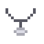 | Hatsjoe... VAHOEG! | Maak Snotje weer beter met een kaasmelkdrankje van Dokter Snotneus-guh |
| Kunnen wij het maken? | Leg het dak op het huisje van Bob de Guhbouwer: de vlag in top! | |
| Tatuu-tatuu! | Blus de marshmallowvuurtjes en haal het guhtje uit de boom voor Brandweercommandant Blusguh | |
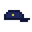 | De Knabbeldief-zaak | Volg de pootafdrukken en vind de knabbelvoorraad van het stadje terug voor Inspecteur Vahoegsma |
| Circuitkampioen | Rij alle drie de banen van het Guh-Circuit uit | |
| Brrrm, VAHOEG! | Rij je eerste race op het Guh-Circuit | |
| Welkom op het circuit! | Vind het Guh-Circuit | |
| Goud op lastig! VAHOEG! ★ | Haal goud op lastig op een baan van het Guh-Circuit | |
| Sneller dan de legende ★ | Versla de gouden geest en pak zelf het baanrecord | |
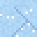 | Bovenop de Kaasberg | Rij de Kaasbergbaan uit |
| Echte coureur | Verzamel het hele circuitpakje: helmpje, racepak en vlagcape | |
| Eigenwijze renguh | Rij een race op lastig op het Guh-Circuit | |
| Boven de wolken | Rij de Regenboogbaan uit | |
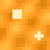 | Wieeee, de looping! | Rij de Vadsbaan uit |
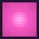 | De hele plaat rond | Dans op alle vier de liedjes minstens 3 kleuren goed |
| Njeg-Njeg Boogie | Dans op het bonusliedje, de Njeg-Njeg Boogie | |
| Ze hangen aan me vet! | Dans op de 70's-versie van "Ze hangen aan me vet" in de Guhdisco | |
| Beats op je oren | Koop het discokoptelefoontje bij de DJ-guh | |
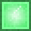 | Mika-Mambo | Dans op de Mika-Mambo, het snelste liedje van de DJ-guh (lastig!) |
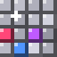 | Mika-Mambo-meester ★ | Dans 10 kleuren achter elkaar goed op de Mika-Mambo. De Mika's giechelen niet meer, ze klappen! |
| Vadsige Tango | Dans de Vadsige Tango: langzaam, dramatisch en heel erg vads | |
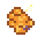 | Alle knabbels terug! | Vind alle gestolen kaasknabbels in het doolhof en ren naar de uitgang |
| Verdwaald in de heg | Vind Het Guhdoolhof in de Guhvelden (en zeg hallo tegen Meneer Vadskronkel) | |
| Op ontdekkingsreis | Koop het hele ontdekkingspakje bij Meneer Vadskronkel: hoedje, kompas en rugzakje | |
| Doolhofmeester | Haal het lastige doolhof: zestien knabbels, drie snelle Mika's en nepknabbels | |
| Niet te pakken! ★ | Haal een medium of lastig doolhof zonder dat een Mika ook maar één knabbel pikt | |
| It giet oan! | Start de Elf-Guhjestocht bij Schaatsmeester Guhglij | |
| Een bevroren kanaal! | Vind de Elf-Guhjestocht in de Guhpolder | |
| Warm ingepakt | Ontgrendel de schaatsmuts, het schaatstruitje, de sjaal en de oorwarmers | |
| Supervahoege schaatsguh ★ | Rij de Elf-Guhjestocht in minder dan 3:40 | |
| Elf-Guhjeskruisje ★ | Schaats de hele Elf-Guhjestocht uit: elf stempels, in de goede volgorde | |
| Guhspelen-ontdekker | Bezoek alle zes gebouwen van De Grote Guhspelen. Je superkompas wijst de weg! | |
| Vahoege wereldreiziger ★ | Bezoek ELK minigame-gebouw van de Guhmensie en Knuffeldal. Kijk in de Guhdex (Minigames) welke je nog mist! | |
| Een bloemetje van ijs | Pluk een guh-ijsbloempje in de Guhpolder | |
| Vers gemalen | Maal knabbelgraan tot knabbelmeel in een guh-molentje | |
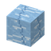 | Een vadsige Pinguh | Tem een Pinguh: een guh in een pinguinpakje! |
| Brrr, de Guhpolder! | Vind de ijskoude, platte Guhpolder | |
| Zesendertig sterren ★ | Haal in één ronde alle 36 sterren. De Mika's zijn helemaal van slag! | |
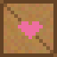 | Drie sterren! | Haal drie sterren bij een fort: alle Mika's weg, alle kisten open en nog een pluisbal over |
| Twaalf forten | Schiet alle twaalf Mika-forten van één ronde plat bij Kapitein Floepguh | |
| Floep! | Vind de Knabbelkatapult op de Vadskliffen: een guhkasteel tegenover een scheef Mika-fort | |
| Klaar om te floepen | Verzamel het hele katapultpakje: het katapulthelmpje, de katapultriem en de pluisbal-oorbelletjes | |
| Tegen de wind in ★ | Speel een hele ronde op lastig: drie pluisballen per fort, en het waait! | |
| Streng maar vadsig | Loop een hele show op lastig: 30 seconden aankleden en een strenge jury | |
| Van het rode matje | Speel alle 9 holes guhgolf op lastig: 6 slagen per hole, de verste afslagjes en extra slijmbumpers! | |
| Klassiekers-kampioen ★ | Speel alle vijf de klassiekers op lastig. Jij bent de vahoegste guh van de Guhmensie! | |
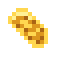 | Rustig aan, guhtje | Speel een klassieker op makkelijk: de beauty, meppen, golf, smullen of vissen |
| Zoals vanouds | Speel een klassieker op medium, zoals je gewend bent | |
| Bliksemmepper | Speel Mika meppen op lastig en mep minstens één Mika | |
| Vet vadsig | Haal punten op het Vadsig eetfestijn op lastig, tussen al dat Mika-vet door | |
| Snelle hengel | Vis een hele Guhvis-wedstrijd op lastig, waar de vissen van je haakje spartelen | |
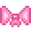 | Ontgrendeld! | Houd een kledingstuk rechtsklik ingedrukt: nu kunnen al je guhs het aan |
| Mijn lievelingsoutfit | Bewaar een favoriete outfit in de kledingkast van je guh (shift-klik op een nummertje) | |
| De chicste guh van de Guhmensie ★ | Ontgrendel 60 kledingstukken. VAHOEG! | |
| Oren op steeltjes | Ontgrendel iets voor de oren: strikjes, oorbelletjes of oorwarmers | |
| Van top tot teen | Ontgrendel alle stukken van een setje (bijvoorbeeld alles van de kleermaker, of het hele sjoelpakje) | |
| Een vadsige kledingkast | Ontgrendel 25 kledingstukken | |
| Op je plaatsen... | Doe mee aan een onderdeel van De Knabbelspelen | |
| Hooggeëerd publiek! | Vind De Knabbelspelen: de grote circustent met de guhoren (Guhweides, Roze pluisjes) | |
| Sportief gekleed | Koop het hele sportpakje bij Juf Vahoegsakee: zweetbandje, fluitje en sportshirtje | |
| Precies op z'n kontje! | Prik het staartje blind (bijna) precies op de goede plek: 950 punten of meer | |
| Samen VAHOEG | Speel De Knabbelspelen met minstens één vriend tegelijk | |
| Kampioen van de tent | Win de Grote Zeskamp tegen minstens één vriend | |
| De Grote Zeskamp | Speel alle zes onderdelen achter elkaar in de Grote Zeskamp | |
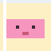 | Vahoegste van de Zeskamp ★ | Haal 5000 punten of meer in de Grote Zeskamp |
| Racen op lastig | Rij de oude guhracebaan uit op lastig | |
| De Grote Guhspelen | Sjoelen, doolhoven, katapulten, schaatsen en racen: word de vahoegste guh van de Guhmensie! | |
| Twintig schijfjes | Sjoel een hele beurt van twintig schijfjes bij Opoe Njegschuif | |
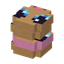 | Komt dat zien! | Vind het Sjoelhuisje in de Guhweides: het huisje met een reuzensjoelbak als dak |
| Honderd! VAHOEG! ★ | Sjoel de volle 100 punten: vijf schijfjes in elk poortje | |
| Gebreid door Opoe | Verzamel het hele sjoelpakje: het sjoelpetje, het sjoelvestje en de sjoelbroche | |
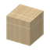 | Opoe is trots | Sjoel 60 punten of meer in één beurt |
Het Guheinde (19)
| De Knabbelkelder | Vind een Knabbelkelder diep onder de Guhmensie | |
| Guhbevrijder ★ | Red zes magere guhs uit de cellen van de Mika's | |
| Waar zijn de knabbels? | Stap in het Guheinde | |
| VAHOEG, gered! | Geef een magere guh in de Knabbelkelder een kaasknabbel | |
| Knabbels terug! | Sla een knabbelkristal kapot | |
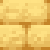 | Larfjesmepper | Mep een Mika-larfje dat je knabbels wil inpikken |
| Nog een rondje | Roep Opper-Mika terug en versla hem nog een keer | |
| Een oog voor vads | Gooi een Oog van Vadsig in de Guhmensie | |
| Een koninklijke opdracht | Luister naar het verhaal van de Koningguh | |
| Door de Knabbelpoort | Reis door een Knabbelpoort naar de buiteneilanden | |
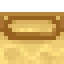 | Twaalf ogen | Open het portaal naar het Guheinde |
| Ridder van het Guheinde | Laat je door de Koningguh tot ridder slaan | |
| Vads-vlug ★ | Versla Opper-Mika binnen vijf minuten | |
| Tuut, terug naar het midden | Stap in een Terugpoort op de buiteneilanden en zweef terug naar het grote eiland | |
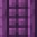 | Een Mika-vesting | Vind een Mika-vesting op de buiteneilanden |
| Guhvleugels! ★ | Pak de Guhvleugels van het vetschip | |
| Eindelijk een knabbel | Geef de uitgeputte Enderguh een kaasknabbel | |
| OPPER-GEVADST! ★ | Versla Opper-Mika en breng de knabbels thuis | |
| Het Guheinde | Een Mika huilt... Dat is het begin van een groot avontuur |
Guhmensie (80)
| Miss Vadsig ★ | Koop het hele Showster-pakje bij de Showguh | |
| Boekenwurmguh ★ | Verzamel alle 14 guhboeken, ook het geheime | |
| Professor Guh | Koop het hele geleerdenpakje met boekenbonnen | |
| Hoog in de bomen | Vind het boomhutdorp van de guhs in het Vadswoud | |
| Hoe groter de Mika... ★ | Versla Grote Mika in een uitdagende guhgrot | |
| Blijf vads, blijf swingen ★ | Koop het hele discopakje bij de DJ-guh | |
| Welcome to vads dimension! | Stap door een guhportaal de Guhmensie in | |
| Vadsig gevoerd | Geef een Hongerige Guh 10 gefrituurde kaasknabbels | |
| Hier ruikt iets kwaads | Vind een uitdagende guhgrot | |
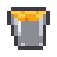 | Zeg eens kaas! | Vind een kaasfontein |
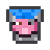 | Blub, wat diep! | Vind een Diepe Guhzee in de Guhmensie |
| Het hol van Mika | Vind een huis van Boze Mika | |
| Vol gaten! | Daal af in de Gatenkaasgrotten, diep onder de Guhmensie | |
| De allergrootste saus ★ | Vind de zeldzame grote kaasfontein | |
| Showtijd! | Vind het Guh Beauty Theater | |
| Door de hamsterbuis | Vind de guhgrotten | |
| Guhkoorts op zaterdagavond | Vind de Guhdisco | |
| Fore, guh! | Vind de zeldzame guhgolfbaan | |
| Lang leve de Koning! ★ | Vind het legendarische guhkasteel | |
| Kermis! | Vind de zeldzame Guhkermis | |
| Op je plaatsen, vads! | Vind de guhracebaan | |
| In steen gebeiteld | Vind het reuzenguhstandbeeld | |
| Buurguhs! | Vind een guhdorp | |
| Ssssst! | Vind de zeer zeldzame guhbibliotheek | |
| Welkom in Guhland! ★ | Vind het zeer zeldzame guh-pretpark | |
| Loop als een Guhgypter ★ | Vind de zeer zeldzame guhramide | |
| Er zwemt iets vads | Vind de guhvisvijver | |
| Aloha, njeg! | Vind een eilandje van Guhwai'i in de Diepe Guhzee | |
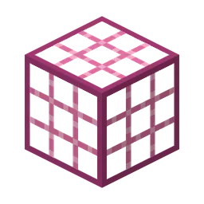 | Huisje, boompje, hamster | Vind een hamsterhuis |
| Pas op je hoofd! | Vind de heel zeldzame kaasmijn | |
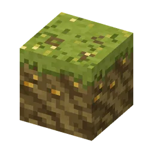 | Tot je knieën in de kaas | Stap in het mistige Kaasmoeras |
| Wie plopt daar op? | Vind de zeldzame Mika-mephal | |
| Een hut op pootjes | Vind de paalhut van de Moerasheks-Mika | |
| Blub blub guh | Vind de Guhbubbel op de bodem van een Diepe Guhzee | |
| Brrr, wat wit! | Vind de Sneeuwguhtoendra in de Guhmensie | |
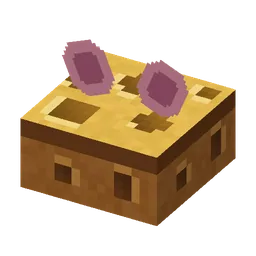 | Sssst... niet knabbelen! | Vind de Stille Voorraadkelder van de Mika's |
| Hier ruikt het vadsig... | Vind het Vadsig eetfestijn, het grote guh-smulfeest | |
| Wie verstopt zich daar? | Vind het zeldzame verstopguhhuis | |
| Guhs in de wolken | Vind de heel zeldzame zwevende guh-eilandjes | |
| Knapperig! | Hak een kaaskorrel uit de gatenkaas | |
| Knabbelen zonder kraken | Eet een stille knabbel: nu hoort niemand je | |
| Het geheim van de kelder | Vind het dagboek van de Voorraadmika | |
| Super vahoege! | Smelt een vahoege-vadsstaaf | |
| Balletje, balletje | Verdien een golfballetje op de guhgolfbaan | |
| Guh op de green ★ | Koop het hele golfpakje bij de Golfguh | |
| Goudse goudkaas | Hak goudkaas uit, diep in de kaasmijn | |
| Een echte mijnguh ★ | Koop het hele mijnwerkerspakje bij de Mijnguh | |
| Kwaak-vahoeg! | Laat twee kikkerguhs met kaasknabbels een kikkerguhtje krijgen | |
| Hap, slik, licht! | Krijg een motknabbel: een kikkerguh die een kaasmot ophapt | |
| Alle kikkerkleurtjes ★ | Heb een roze, een mint en een gele motknabbel tegelijk op zak | |
| Boing, njeg! | Stuiter omhoog op borrelende kaassaus | |
| Ahoy, knabbels! | Open de ton op een knabbelvlotje | |
| Modderguhtje | Tem een groen-geel gevlekte Kaasmoerasguh | |
| Vahoeg op de kermis ★ | Koop het hele kermispakje bij de Kermis-guh | |
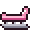 | WIEEEEE! | Rij een rondje in de achtbaan van de Guhkermis |
| Vahoege Majesteit ★ | Vind het hele koningspakje in de schatkamer van het guhkasteel | |
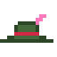 | Mika-jager ★ | Koop het hele Mika-jagerpakje bij de Mepguh |
| MEP! | Speel een potje Mika meppen en verdien mepmunten | |
| Weg met die heks! | Versla de Moerasheks-Mika | |
| Stinkend lekker | Krijg moeraskaas: goed voor in de guhbrouwketel | |
| Diepzeeguh | Koop een duikhelm bij de Zeemeerguh | |
| Zeemeerguhruiter ★ | Tem een wilde Zeemeerguh | |
| Vroem vroem, guh! ★ | Koop het hele jockeypakje bij de Raceguh | |
| Hop hop, Guh! | Rijd op een guh met zadel | |
| Guhmensie | Kaasknabbels, roze wol en heel veel guhs | |
| Helemaal smulklaar ★ | Koop het slabbetje, de bakkersmuts en het roze schort bij de Smulguh | |
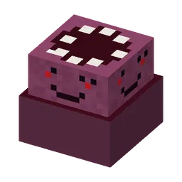 | Wie knabbelt daar? | Maak de Vadswaker wakker (oeps) |
| Vadswaker? Vadsslaper! ★ | Versla de Vadswaker (niet verplicht, echt niet!) | |
| Klein maar vads | Tem een babyguh (babyguhs zijn dol op knabbelbessen!) | |
| Tussen de reuzen | Loop door het mistige Vadswoud, onder de reuzenguhbomen | |
| Boswachter in spe | Koop de boswachtershoed en de boswachtersjas bij de Boswachterguh | |
| Welterusten, guh | Laat je eigen guh 's nachts in een guhnestje slapen | |
| Plukker van het jaar ★ | Heb 64 knabbelbessen tegelijk bij je. VAHOEG, wat een oogst! | |
| Een boom van een guh ★ | Laat vier vadshoutzaailingen in een vierkant uitgroeien tot een reuzenguhboom | |
| Guhlock Holmes ★ | Koop het hele detectivepakje bij Verstopguhtje | |
| Gevonden! | Vind alle verstopte guhs in het verstopguhhuis | |
| Puur goud ★ | Vang een Gouden Guhvis in de Guhvis-wedstrijd | |
| Meester-visguh ★ | Koop het hele vispakje bij de Visguh | |
| Met je hoofd in de wolken | Vind de wolkenmuts en de wolkenkraag in de wolkenkist op het Wolkje | |
| Op wolkje negen ★ | Tem de enige echte Wolkguh |
Het Knuffeldal (48)
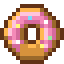 | Bakken aan de lopende band | Maak zes klantjes op rij blij bij Bakker Korstje |
| Warme broodjes! | Help een klantje in de Knabbelbakkerij aan zijn bestelling | |
| Meesterbakker ★ | Bak alle twaalf recepten van het receptenboek | |
| Volle stempelkaart ★ | Verzamel alle acht ballonstempels: vlieg alle vier de routes | |
| Hoog, hoger, VAHOEG! | Maak een ballonvlucht met Kapitein Wolkje | |
| Ballonnen in de lucht! | Vind het Ballonfestival op de Guhvelden of de Roze pluisjes | |
| Zo zacht! | Loop over het roze knuffelgras van het Knuffeldal | |
| Wol, ei en melk | Krijg pluiswol, een knabbelei en kaasmelk van je blije boerderijdieren. VAHOEG! | |
| Boer zoekt Guh | Vind de Guhboerderij van Boerin Hooibaal, in de guhweides of de kaasvlakte | |
| Blij beestje | Maak een boerderijdier blij: aaien, borstelen en voeren (twee van de drie op een dag) | |
| Ahum! | Praat met Burgemeester Vadsema op zijn bordes | |
| Ze hangen aan haar veh | Help Cocotje vinden wat ze kwijt is | |
| Niemand ontsnapt! | Breng in één spelletje minstens 8 babyguhtjes terug naar hun wiegje, zonder dat Juf Knuffel er eentje zelf moet halen | |
| Stil maar, babyguhtje | Geef drie babyguhtjes in de Knuffelcreche een flesje, een schone luier, stop ze in en zing een slaapliedje | |
| Het hele liedjesboek | Zing alle vier de slaapliedjes van Juf Knuffel. Zzz... VAHOEG! (zachtjes) | |
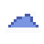 | De hele verhalenbundel ★ | Luister naar alle twaalf verhalen van Opa Guh (één per nacht!) |
| Er was eens... | Luister bij het kampvuur naar een verhaal van Opa Guh | |
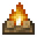 | Kampvuurtje | Vind een kampeerplekje in het Knuffeldal of op de Guhweides |
| Lekker uitgeslapen | Slaap een hele nacht in een guh-slaapzak | |
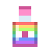 | Kapselcollectie compleet ★ | Vul de hele kapselcollectie: alle 8 kapsels en alle 8 haarverfjes |
| Knip knip! | Geef een guh een nieuw kapsel bij Knip & Vads (of met een kapsel op je eigen tamme guh) | |
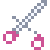 | Vahoege kappersshow | Haal minstens 120 punten in een kappersshow van Kapper Krulletje |
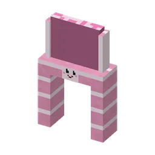 | Glijbaankampioen ★ | Glijd van alle drie de glijbanen: de Roze Trechter, de Glimtunnel en de Grote Plons |
| Eendjesverzamelaar ★ | Vind alle twaalf bijzondere badeendjes op de glijbanen | |
| Plons! | Vind het Knuffelbad aan de guhzee | |
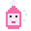 | Schoon en vahoeg | Was je eigen guh in een guh-wastobbe: inzepen, schuimen, spoelen, föhnen |
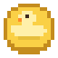 | Wieeeee! | Glijd van een glijbaan van het Knuffelbad |
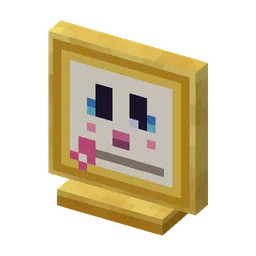 | Knuffelburgemeester ★ | Word Knuffelburgemeester van het Knuffeldal. VAHOEG! |
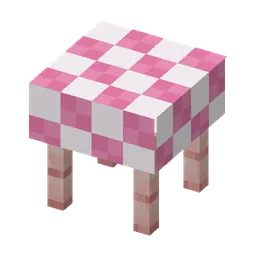 | Het Grote Knusfeest | Breng alle zes feesttaakjes en vier het feest aan het feestbuffet |
| Kruimeldief! | Lok een Kruimel-Mika weg van zijn buit met een lekkernij | |
| Superpluizig | Tem een Pluisguh in het Knuffeldal | |
| Het Knuffeldal | Knus, lief en guhig: stap de Guhmensie in | |
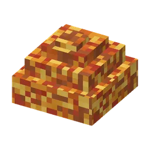 | Het hele jaar knus ★ | Vul het seizoensplakboek: twee dingen in elk seizoen |
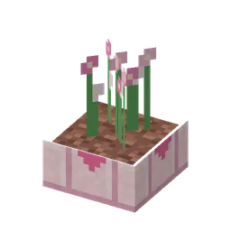 | Welkom in het stadje | Vind het stadje in het midden van het Knuffeldal |
| De hele sterrenatlas ★ | Vind alle 15 guh-sterrenbeelden, ook de drie van de sterrenregen. VAHOEG, sterrenkijker! | |
| Hoog in de sterren | Vind de Guh-Sterrenwacht, hoog op de Guhpieken of de Vadskliffen | |
| Verbind de sterretjes | Kijk 's nachts door een guh-telescoop en verbind je eerste guh-sterrenbeeld | |
| Een vallende knabbel! | Vind een zeldzaam sterrenbeeld tijdens een sterrenregen | |
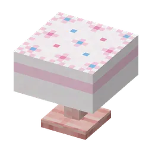 | Gezellig! | Houd een gezellig theekransje met je tamme guhs in het Knabbelthee-huisje |
| Theeproever | Zet of drink alle vier de theesoorten | |
| Zelfgebakken! | Serveer op een gezellig theekransje iets uit de Knabbelbakkerij. Mmm, VAHOEG! | |
| Eigen kweek | Oogst je eerste plantje uit een guhbloempot of guhmoestuinbak | |
| Groene guhvingers | Vul het tuinboek: plant en oogst knabbelplantjes, theekruid en guhbloemen | |
| Grijpen maar! | Grijp een knuffel uit de grijpmachine | |
| Tingeling! | Eet een kaasijsje van IJscoguh Tingeling, of geef er een aan een guh | |
| De volle knuffelkast ★ | Verzamel alle 22 guhknuffels, ook de glitterknuffel | |
| Het koortje | Speel een liedje op de guh-xylofoon (of je fluitje) en laat guhs meezingen | |
| Het hele liedjesboekje | Speel alle zes de liedjes op de guh-xylofoon |
Lieve vadsjes van elkaar (56)
| Lief dagboekje | Open het dagboekje van je guh (houd rechtsklik op je guh, knop Dagboekje) | |
| Lieve vadsjes van elkaar | Word met een guh lieve vadsjes van elkaar (100 hartjes) | |
| Mega lieve vadsjes van elkaar | Word met een guh mega lieve vadsjes van elkaar (600 hartjes) | |
| Zielsguh bff 5evr <3 ★ | Word met een guh zielsguh bff 5evr <3 (2000 hartjes). VAHOEG! | |
| Ik ken al je geheimpjes ★ | Ontdek alle acht favorietjes van één guh. VAHOEG! | |
| Een geheimpje! | Ontdek een favorietje van een guh. Hij laat het merken met een hartjesexplosie! | |
| Lievelingskunstje! | Ontdek de lievelingsemote van een guh | |
| Lievelingshapje! | Ontdek het lievelingshapje van een guh (voer hem allerlei snackjes) | |
| Lievelingskleur! | Ontdek de lievelingskleur van een guh (trek hem kleertjes aan) | |
| Lievelingsknuffel! | Ontdek de lievelingsknuffel van een guh (zet knuffels bij hem neer) | |
| Lievelingsliedje! | Ontdek het lievelingsliedje van een guh (xylofoon of disco) | |
| Lievelingsplekje! | Ontdek het lievelingsplekje van een guh (neem hem mee op reis) | |
| Lievelingsspeeltje! | Ontdek het lievelingsspeeltje van een guh | |
| Allerbeste guh-vriendje! | Ontdek wie het allerliefste guh-vriendje van een guh is | |
| Tingeling! | Stuur een guh met de Guhbel naar de Guhkamer in je Guhmaag | |
| Op visite, njeg | Bezoek de Guhkamer van iemand anders (zijn maag moet openbaar zijn) | |
| Logeerpartijtje | Stap door de deur in je Guhmaag je eigen Guhkamer in | |
| Een kamer met uitzicht | Je Guhkamer is gegroeid, dankzij een zielsguh bff 5evr <3 | |
| Een huisje met oortjes | Bouw een Guhhuisje: een huisje in de vorm van een guhhoofd | |
| Villa Vahoeg | Bouw het grootste Guhhuisje: plek voor acht vadsige bewoners | |
| Vol is vol, njeg! | Laat een Guhhuisje helemaal vol wonen met guhs en maatjes | |
| Klusjeskampioen | Laat je bewoners alle tien de klusjes doen | |
| Guh de bakker | Laat een bewoner malen in een guh-molentje of bakken in een knabbeloven | |
| Alles op zijn plek | Laat de spulletjes van klusjes in een Bank Guh sorteren | |
| Lieve dierenoppas | Laat een bewoner de boerderijdieren aaien en voeren, of een knabbelkorf oogsten | |
| Boertje guh | Laat een bewoner rijpe gewassen oogsten en opnieuw planten | |
| Honderd keer vads geholpen ★ | Je bewoners deden samen honderd klusjes. VAHOEG! | |
| Lichtjes aan | Een bewoner doet 's avonds de lampjes aan (en 's ochtends gapend weer uit) | |
| Graafguh | Laat een bewoner van je Guhhuisje kaasknabbels opgraven | |
| Oppasguh | Een bewoner verzorgt een muisje, schildpadje of een gewonde guh | |
| Opgeruimd staat netjes | Laat een bewoner rondslingerende spulletjes opruimen | |
| Bessenplukker | Laat een bewoner bessen of guhbloemetjes plukken | |
| Visje vangen | Laat een bewoner guhvissen en schelpjes vangen in de vijver bij het huisje | |
| Waakguh | Een bewoner piept en waarschuwt je voor een Mika of monster (en duwt Mika's zachtjes weg) | |
| Kijk wat ik vond! | Een bewoner vindt iets zeldzaams bij het graven of vissen | |
| Lieve vadsjes van elkaar | Tem een guh: jullie hartjesmeter begint te lopen. Hartjes gaan nooit omlaag! | |
| Een speldje met een hartje | Lieve vadsjes van elkaar: het hartjesspeldje en de emote Hartjes zijn van jou | |
| Het knuffeltruitje | Mega lieve vadsjes van elkaar: het knuffeltruitje en het knuffeldansje zijn van jou | |
| Een kroontje voor je zielsguh ★ | Zielsguh bff 5evr <3: het zielskroontje en de bff-knuffel zijn van jou | |
| Beste vriendjes ★ | Twee van je guhs worden beste vriendjes: een echt bff-duo! | |
| Bff-knuffel ★ | Doe de bff-knuffel met je zielsguh: een dikke knuffel met een groot hart boven jullie | |
| Samen gespeeld | Speel een minigame met je guh erbij. Samen spelen = hartjes! | |
| Het gouden hartjes-halsbandje ★ | Het allermooiste halsbandje: alleen voor een zielsguh. VAHOEG! | |
| Hup, hup, VAHOEG! | Je guh juicht voor je bij een minigame: een goede worp, een vangst, een snelle tijd | |
| Achterop! | Je guh springt achterop in de racekart en rijdt de hele race mee | |
| Een dansje voor je record | Zet een nieuw record neer terwijl je guh toekijkt: hij doet het knuffeldansje | |
| Schaatsmaatjes | Je guh schaatst met je mee op de Elf-Guhjestocht | |
| Guh-vriendjes | Twee van je guhs worden vriendjes (laat ze veel samen zijn) | |
| Welkom thuis! | Kom na een lange tijd terug bij je guh: hij doet een welkom-terug-dansje | |
| Zwemmaatjes | Zwem in het Knuffelbad: je guh springt erin en zwemt met je mee | |
| Speeltuin Vahoeg | Je guhs hebben met alle vier soorten speelgoed gespeeld | |
| Hoger, hoger! | Geef een guh op de schommel of de wip een duwtje | |
| Speelkwartiertje! | Laat een guh met speelgoed spelen: een knabbelbal, een glijbaantje, een tunnel, een wip of een schommel | |
| Balletje trappen | Schop een knabbelbal (linksklik). Wie haalt hem? Njeg! | |
| Gevonden! | Klop op een pluizige tunnel waar een guh zich in verstopt | |
| Ook een beetje guh | Ga zelf van het guh-glijbaantje, of schommel of wip zelf mee (sluip + rechtsklik) |
Guhverhalen (78)
| Op tijd! | Kom op tijd terug in Nomguh (Steele-Mika wil de eer, iedereen giechelt) | |
| Een held op een sokkel | Zet je Baltoguh-beeldje ergens neer | |
| De medicijnkist | Pak de medicijnkist in de berghut op de Nomguhpieken | |
| Da, kleine guh... gak! | Vraag Boris de gans om raad | |
| Een eigen Baltoguh | Neem Baltoguh mee naar huis (eenmalig, alleen voor jou) | |
| Maar heel misschien... een Baltoguh wel ★ | Breng het medicijn naar Rosy en word de Held van Nomguh | |
| Muk en Luk | Zeg hallo tegen allebei de ijsbeer-guhs (Luk zegt niks terug) | |
| Brrr, Nomguh! | Vind Nomguh, het besneeuwde guhstadje midden in de Sneeuwguhtoendra | |
| Een buitenbeentje | Maak kennis met Baltoguh bij de oude boot | |
| Warm ingepakt in Nomguh | Ontgrendel het rode sjaaltje, de wolfsoortjes, de sneeuwmuts en de wantjes | |
| Hatsjoe-njeg! | Bezoek Rosy en de zieke guhbaby's in het ziekenhuisje | |
| Hup, hup, door de sneeuw! | Rijd 200 blokken met je eigen sneeuwslee door de sneeuw | |
| Over de ijsbrug | Kom met de slee over een hele ijsbrug zonder eraf te ploffen | |
| Kampioen van Nomguh ★ | Win de sledesprint op lastig. Steele-Mika wordt helemaal roze | |
| Net op tijd opzij! | Ontwijk een lawine met je slee | |
| Warme pootjes | Rust even met je sledehondjes bij een vuurkorf onderweg | |
| De sledesprint | Race tegen Steele-Mika naar de berghut en terug | |
| Sneller dan Steele-Mika | Win de sledesprint van Steele-Mika (hij zegt dat het de wind was) | |
| Door de sneeuwstorm | Breng met Baltoguh en de guh-sledehondjes het medicijn op tijd naar het ziekenhuisje van Nomguh | |
| Winterspulletjes | Koop iets moois bij Steele-Mika voor je sledebelletjes | |
| Zo snel als de wind | Rijd op je Baltoguh supervahoeg door de sneeuw | |
| Snuf snuf, naar huis! | Laat je Baltoguh de weg naar je huisje ruiken | |
| Hup, Baltoguh! | Begin aan de tocht door de sneeuwstorm naar de berghut | |
| De witte wolf-guh | Huil mee met Baltoguh op het dieptepunt van de tocht | |
| Uit het asiel | Lilo-guh adopteert 626-guh uit het guh-asiel | |
| Aloha, Lilo-guh! | Maak kennis met Lilo-guh en Nani-guh in hun paalhuisje | |
| Een vallende ster? | Vind de neergestorte capsule boven op de heuvel | |
| Knak, knak! | Zie Schilly-eitjes uitkomen op het strand | |
| Experiment 626, thuis! ★ | Neem 626-guh mee naar huis (één keer per speler) | |
| Een bloem achter je oor | Pluk een roze hibiscus op Guhwai'i | |
| Een eigen palmpje | Plant een kokosnoot in het zand: er groeit een guh-palm uit | |
| Eilandkleertjes | Heb het hula-rokje, de bloemenkrans, de 626-oren en het surfplankje | |
| Kokosmelk! | Drink een flesje kokosmelk | |
| Krak, slurp! | Eet een kokosnoot van een guh-palm | |
| Lief zijn is best vahoeg | Geef 626-guh een kokosnoot, een roze hibiscus en kaasknabbels | |
| Ohana betekent familie | Niemand wordt achtergelaten... of vergeten. Njeg. | |
| Alleen maar rommel | Ruim de rommel van 626-guh op (er is niks kapot!) | |
| Knipoog! | Klik op het gezichtje van een guh-palm | |
| Aan de muur! | Hang de poster 'Onberekenbaar vahoeg' op | |
| ONBEREKENBAAR VAHOEG | Zet een guh op de vadsigheid-scanner. De meter slaat door! | |
| Snorkelen | Zwem in de warme lagune van Guhwai'i, bij het kaaskoraal | |
| Makkelijk, medium, lastig! | Surf en dans op alle drie de niveaus (zes rijen in je Guhdex) | |
| Heupjes los! | Dans een hula-liedje met Lilo-guh op het podium | |
| Geen stapje mis ★ | Dans een heel liedje op medium of lastig zonder één stapje te missen | |
| Knabbeldraai! | Spring van de kam van een golf en draai een heel rondje in de lucht voor je landt | |
| Hula aan huis | Koop het Tiki-radiootje: de hula-liedjes van Guhwai'i, ook thuis | |
| Aloha, surfstrand! | Vind het surfstrand van Guhwai'i: surfen en hula met Lilo-guh, en Tikiguh's Tiki-kraampje | |
| Golfje gevangen, njeg! | Surf met Lilo-guh een golf helemaal uit | |
| Koning van de golven ★ | Surf 6000 punten of meer op lastig | |
| Tiki-tiki-njeg | Koop iets moois bij Tikiguh's Tiki-kraampje | |
| Door de tube, VAHOEG! | Surf een tijdje in de krul van een brekende golf, net voor het schuim (medium of lastig) | |
| Aloha, njeg! | Laat je 626-guh ukelele spelen (knop in het guhmenu) | |
| Tokkel tokkel | Speel zelf op de reserve-ukelele: iedereen danst! | |
| Een echt hemelguhtje ★ | Ontgrendel het gouden aureooltje en de wolkenvleugeltjes | |
| Ba-dum, ba-dum! | Breng een guhkristal, een gouden kaasknabbel en een pluisveertje: het Knuffelhart klopt weer. VAHOEG! | |
| De wolkenhoeder | Praat met de wolkenhoeder: hij past op het slapende Knuffelhart | |
| Hoog in de wolkjes | Vind het Hemelkapelletje op zijn zwevende eilandje en neem de wolkenlift omhoog | |
| Een lief sterretje | Breng een Herinnering-sterretje naar het Knuffelhart | |
| Terug uit de wolkjes | Laat het Knuffelhart een van je guhs uit de wolkjes terughalen, met al zijn hartjes en zijn dagboekje | |
| Het kloon-eiland | Vind het rotseiland met het lab onder de glazen koepel, ergens in de Diepe Guhzee | |
| x2, njeg! ★ | Neem de Guhtwo mee: hij zweeft, trekt kaasknabbels naar zich toe en eet alles dubbel | |
| Een dubbele portie | Vul de grote knabbelschaal in de arena: Guhtwo en Mieuwguh smullen samen en worden beste vriendjes | |
| Hihihi! | Ontmoet Mieuwguh, het kleine roze zwevende guhtje van het kloon-eiland | |
| Speurneus van het lab | Vind alle zes de labnotities en lees wat er met de kloontank gebeurd is | |
| Blub, blub, gerepareerd! | Bouw de vier onderdelen in bij de gebarsten kloontank | |
| Knabbel-telekinese | Laat je Guhtwo een kaasknabbel naar zich toe laten zweven | |
| Guh-trainer | Verzamel het hele kloon-eiland-pakje: trainerpetje, trainerpakje, Guhtwo-staartje en het Mieuwguh-ballonnetje | |
| Een verstrooide professor | Beloof Professor Knabbelkloon dat je zijn zes labnotities zoekt | |
| Dubbel lekker | Geef je Guhtwo een snack: dubbele hartjes, x2! | |
| Guhverhalen | Stap de Guhmensie in: daar wachten Baltoguh, Guhtwo, 626-guh, het Knuffelhart en de Timmerguh op je. Njeg! | |
| Ons eerste huisje | Laat een van je guhs wonen in het huisje dat je van de Timmerguh kreeg | |
| Hallo, Timmerguh! | Vind de bouwplaats aan de rand van een Knuffeldal-stadje en maak kennis met de Timmerguh | |
| De vlag in top! | Leg samen met de Timmerguh het oortjesdak op zijn halve guhhuisje | |
| Samen een huisje bouwen | Krijg het bouwboekje van de Timmerguh: nu timmer je zelf alle drie de Guhhuisjes! | |
| Knus ingericht | Zet een speeltje en een guhlampje bij een van je Guhhuisjes (een extra klusje van de Timmerguh) | |
| Aloha, njeg! | Vind een eilandje van Guhwai'i in de Diepe Guhzee: palmen, kokosnoten en warm zand | |
| Er was eens... | Kies een plek in de nieuwe tab Verhalen van je superkompas | |
| Brrr, wat wit! | Vind de Sneeuwguhtoendra, het witte heuvelland waar ergens Nomguh ligt |